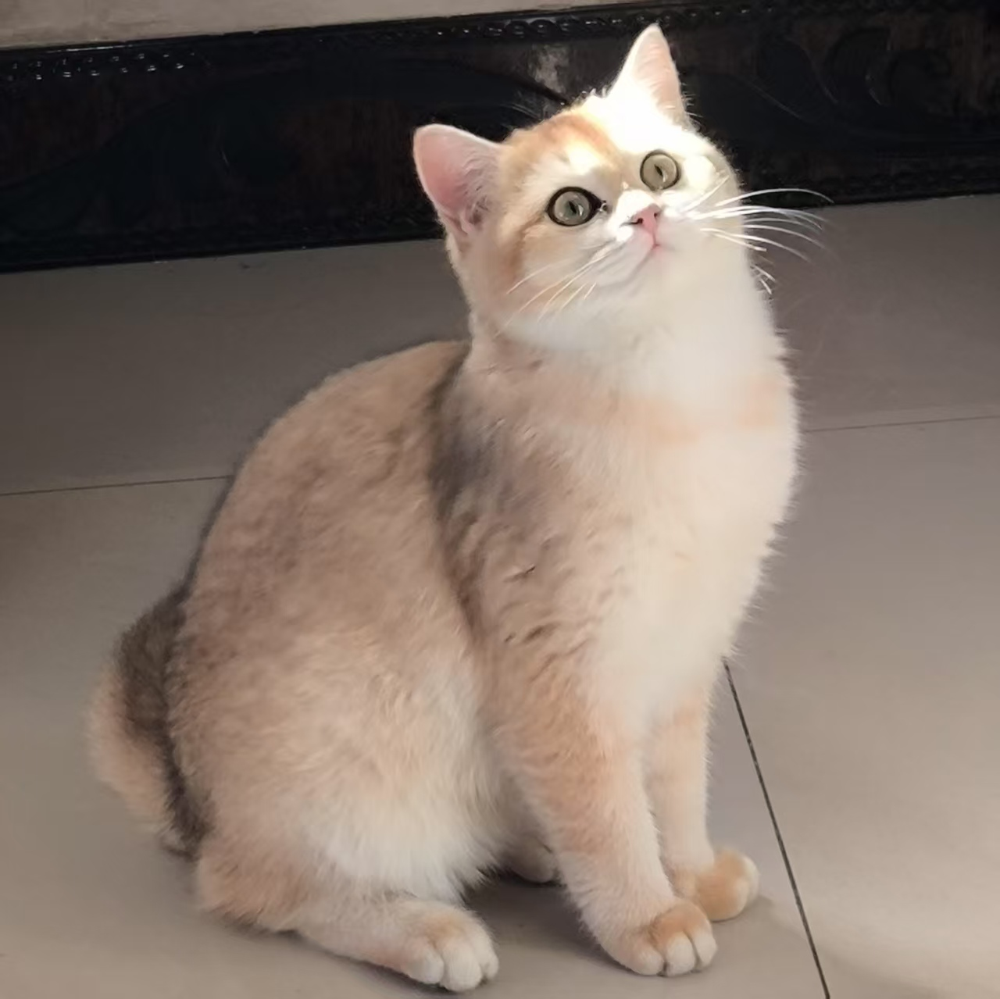

|
Zijing Hu I am a Ph.D student at College of Computer Science and Technology, Zhejiang University, advised by Prof. Kun Kuang. My research interests mainly revolve around Generative Models (particularly image generation) and Causal Inference. |
 |
{kind=link}
News[Feb. 2025] One paper was accepted by CVPR 2025. [Jun. 2024] I received my BS degree from Zhejiang University. |
Experience |
|
|
Aug. 2024 - Present, Zhejiang University Ph.D student, majoring in Computer Science and Technology, advised by Prof. Kun Kuang. Sep. 2020 - Jun. 2024, Zhejiang University Undergrad, majoring in Computer Science and Technology, GPA: 4.65/5.0. |
Publications*Equal Contribution. †Corresponding Author. |

|
Towards Better Alignment: Training Diffusion Models with Reinforcement Learning Against Sparse Rewards
|
Selected Honors- Outstanding Graduate of Zhejiang Province, 2024 - Second-class Scholarship of Zhejiang University, 2023 - National Scholarship issued by Ministry of Education of the People's Republic of China, 2022 - First-class Scholarship of Zhejiang University, 2022 |
|
Last Update 2025.03.15. Thanks to Jon Barron and Zijun Wang. |